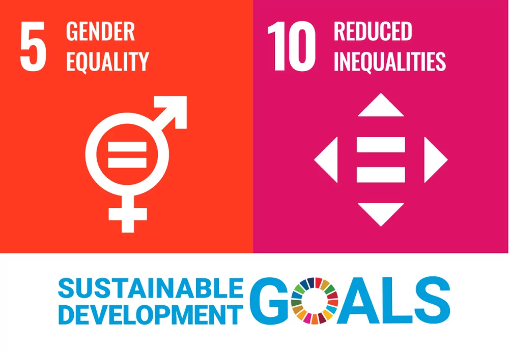

Current projects
Ongoing programmes in awareness, rights, health, and sustainable livelihoods for women in the community.
View current projectsWE-TRUST works with women, families, and communities through skill development, welfare support, relief initiatives, and sustainable livelihood programmes.
Our programmes focus on socio-economic progress, rights awareness, health support, community participation, and opportunities that help women build stronger futures for themselves and their families.
Ongoing programmes in awareness, rights, health, and sustainable livelihoods for women in the community.
View current projects
Past interventions including celebration support, relief work, and empowerment programmes backed by community trust.
View completed projects
Planned programmes that expand support, build stronger livelihoods, and continue the trust’s women-focused mission.
View upcoming projectsWE-TRUST’s work with women construction workers in Pudukkottai district focused on awareness, rights, health, skill training, and sustainable livelihood development.
These programmes aimed to improve socio-economic conditions and help women move toward long-term stability and confidence.
Read project details
WE-TRUST remains grateful to donors, volunteers, community leaders, and supporters whose involvement helps extend dignity and opportunity to deserving women and families.
Read gratitude page
The trust’s work aligns strongly with gender equality while also supporting goals related to poverty reduction, health, education, decent work, reduced inequalities, and partnerships.
Be part of a journey that values dignity, opportunity, and practical support.